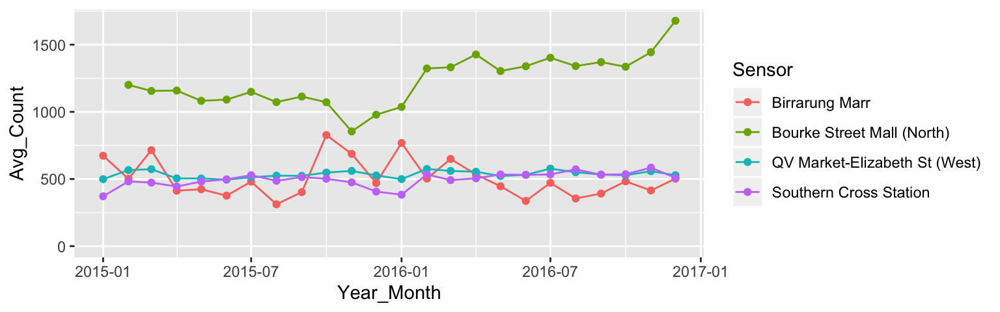

Introduction
Going from raw temporal data to model-ready time series objects is painful. Temporal data in the wild can arrive in many possible formats: irregular or multiple time intervals, point events that need aggregating, multiple observational units or repeated measurements on multiple individuals, and heterogeneous data types. For modelling purposes, time series data needs to be coerced into simplified matrices, however there is currently no formal process for how to organise and map wild time series data into model-ready data frames. This results in a myriad of ad hoc (and possibly inaccurate) solutions and the loss of the data richness while in transition. Mining temporal information from time series objects is also inhibited by limited toolkits that hinge on that specialist format. Figure 1 illustrates the lumpy workflow of current time series analysis.

Figure 1: Illustration of the current time series analysis workflow, adapted from R for Data Science (Wickham and Grolemund 2016). The missing “tidy” temporal data structure leads to a myriad of ad hoc solutions and duplicated efforts from raw temporal data to model-oriented time series objects.
The tsibble package aims to make this workflow more robust, accurate, and efficient, as visualised in Figure 2. It provides a new data abstraction to represent temporal data, referred to as “tsibble”, allowing the “tidy data” principles (Wickham 2014) to be brought to the time domain. It also helps to lay the plumbing for temporal data analysis modules of transformation, visualisation, and modelling, to achieve rapid iteration in gaining data insights.
Figure 2: Tsibble defines tidy data in temporal context and lubricates the process of time series analysis.
Tidy data representation for temporal data
First and foremost, tsibble represents tidy temporal data. Contextual semantics—index and key—are introduced to tidy data in order to support more intuitive time-aware manipulations and enlighten new perspectives for time series model inputs. A variable representing time, referred as “index”, provides a contextual basis for temporal data. The “key” consists of one or more variables that uniquely identify the observational units recorded over time. The remaining columns are considered as measurements. Figure 3 demonstrates the shape of a tsibble.
Figure 3: The architecture of the tsibble structure is built on top of the tidy data, with time-series contextual semantics: index and key.
In order to be a valid tsibble we require distinct rows as identified by the index and key. Duplicate rows in the index and key variables signal a data quality issue, which would likely affect subsequent analyses and hence decision making. This requirement ensures the tsibble is a valid input for time series analytics and models.
To create a tsibble, one needs to declare the index and key. Hourly pedestrian counts at different locations in downtown Melbourne, Australia are used as an example. The “key” includes four sensors, and the “index” contains date-times of one hour interval along with the time zone of Melbourne. The output displays contextually comprehensive details that aid users in understanding their data better.
library(tsibble)
pedestrian %>%
as_tsibble(key = Sensor, index = Date_Time)
#> # A tsibble: 66,037 x 5 [1h] <Australia/Melbourne>
#> # Key: Sensor [4]
#> Sensor Date_Time Date Time Count
#> <chr> <dttm> <date> <int> <int>
#> 1 Birrarung Marr 2015-01-01 00:00:00 2015-01-01 0 1630
#> 2 Birrarung Marr 2015-01-01 01:00:00 2015-01-01 1 826
#> 3 Birrarung Marr 2015-01-01 02:00:00 2015-01-01 2 567
#> # … with 6.603e+04 more rowsDomain specific language for wrangling temporal data
Besides a data abstraction, tsibble is a domain specific language (DSL) in R for transforming temporal data. It leverages the tidyverse verbs and adds some new verbs/adverbs to the vocabularies for more intuitive time-based manipulations. Since a tsibble permits time gaps in the index, it is good practice to check and inspect any gaps in time following the creation of a tsibble, in order to prevent inviting some avoidable errors into the analysis. A suite of verbs are provided to understand and tackle implicit missing values; and fill_gaps() turns them into explicit ones along with imputing by values or functions. For example, the code below, sets implicit missing counts in the pedestrian data set to zero before finding the lag and plotting.
library(tidyverse)
pedestrian %>%
fill_gaps(Count = 0L) %>%
group_by(Sensor) %>%
mutate(Lagged_Count = lag(Count)) %>%
ggplot(aes(x = Lagged_Count, y = Count)) +
geom_point(alpha = 0.3) +
facet_wrap(~ Sensor, ncol = 2, scales = "free")A new adverb index_by() adjacent to a verb allows for index subgrouping operations. In conjunction with summarise(), it performs aggregations over time to different time resolutions. The following snippet demonstrates how monthly average pedestrian counts are computed for each sensor and then plot with ggplot2.
pedestrian %>%
group_by(Sensor) %>%
index_by(Year_Month = yearmonth(Date_Time)) %>%
summarise(Avg_Count = mean(Count)) %>%
ggplot(aes(x = Year_Month, y = Avg_Count, colour = Sensor)) +
geom_line() +
geom_point() +
expand_limits(y = 0)
The tsibble DSL provides a set of functional yet evocative verbs for empowering users to compose expressive statements; that facilitates to frame the data analytic problems and document how to approach them through clean code.
Rolling windows with functional programming
Rolling window calculations are widely used techniques in time series analysis, and often apply to other applications. These operations are dependent on having an ordering, particularly time ordering for temporal data. Three common types of variations for rolling window operations are:
slide()/slide2()/pslide(): sliding window with overlapping observations.tile()/tile2()/ptile(): tiling window without overlapping observations.stretch()/stretch2()/pstretch(): fixing an initial window and expanding to include more observations.
Rolling window animation

Rolling window embraces functional programming, which frees users from verbose statements but focuses on succinct expressions instead. These expressions can be as simple as moving averages, or as complex as rolling regressions and forecasting. This family turns out useful for time series cross validation. Their multiprocessing equivalents prefixed by future_*() enable easy switch to rolling in parallel.
An example of rolling regression in parallel is given below. A weekly sliding window (.size = 24 * 7) is carried out for each sensor on a small subset of pedestrian data. The subset is defined through filter_index(~ "2015-03"), in which ~ "2015-03" is shorthand for “from the start of the time to the end of March 2015”. For each element in the sliding window, the components of interest from the regression model, fitted values and residuals, are extracted and squeezed into list columns of a tibble.
library(furrr)
plan(multiprocess)
my_diag <- function(...) {
data <- tibble(...)
fit <- lm(Count ~ Time, data = data)
list(fitted = fitted(fit), resid = residuals(fit))
}
pedestrian %>%
filter_index(~ "2015-03") %>%
nest(-Sensor) %>%
mutate(diag = future_map(data, ~ future_pslide_dfr(., my_diag, .size = 24 * 7)))
#> # A tibble: 4 x 3
#> Sensor data diag
#> <chr> <list> <list>
#> 1 Birrarung Marr <tsibble [2,160 × … <tibble [334,825 × …
#> 2 Bourke Street Mall (North) <tsibble [1,032 × … <tibble [145,321 × …
#> 3 QV Market-Elizabeth St (We… <tsibble [2,160 × … <tibble [334,825 × …
#> 4 Southern Cross Station <tsibble [2,160 × … <tibble [334,825 × …Conclusions
The tsibble R package articulates the time series data pipeline, which shepherds raw temporal data through to time series analysis, and plots. It also lays the fundamental computing infrastructure of a new ecosystem for tidy time series analysis, known as “tidyverts”, including time series features (the feasts package) and forecasting (the fable package).
(Last updated: Jul 21, 2019)
Note
This article is originally written for the Software Corner of the Biometric Bulletin (to appear).
This is a joint work with Dianne Cook and Rob J Hyndman. A longer version of the data structure and design principles about the tsibble R package can be found at arXiv (https://arxiv.org/abs/1901.10257).
Acknowledgements
The author would like to thank Garth Tarr for editing and reviewing the article, which improves the readability.
Wickham, Hadley. 2014. “Tidy Data.” Journal of Statistical Software 59 (10). Foundation for Open Access Statistics: 1–23.
Wickham, Hadley, and Garrett Grolemund. 2016. R for Data Science. O’Reilly Media. http://r4ds.had.co.nz/.